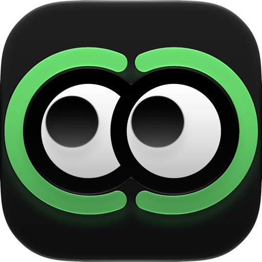

Capture, mark up and share what's on your screen.
Feedback is a small, native Mac app for screenshots, screen recordings and GIFs, with storyboards, animatics, reference boards and color palettes built in. It opens almost instantly.
Free to download · macOS 15 or later · No account needed

Everything for showing someone what you mean
From a quick annotated screenshot to a full storyboard or animatic, without switching apps.
Annotate screenshots in seconds
Press ⌥⇧S in any app, drag over what you want, and mark it up with arrows, boxes, circles, a pen and text. Save it, or copy it straight into Slack, Mail or Figma.
- Corner preview you can drag into any app
- Free crop, or 1:1, 4:5, 16:9 and 9:16
- Copy to the clipboard after every export
Convert video to GIF, at the size you need
Record your screen with ⌥⇧D, or open any video. Trim it, crop it and see the file size before you export as GIF, MP4 or ProRes. MP4 and MOV keep the sound.
- Right-click a video in Finder › Convert to GIF
- Small, Balanced or High quality
- Set the size, frame rate and speed

Turn screenshots into storyboards
Every capture becomes a numbered frame. Reorder them, hide the ones you don't need, and export the whole board as one image: PNG, JPEG, HEIC or PDF.

Cut animatics on a real timeline
Line up shots, add transitions, titles, captions and music, animate with keyframes, and export with a timecode burn-in for reviews.

Reference boards that float on top
Collect images on a free-form board, then float it above any app while you draw, design or edit. Set its opacity, or let clicks pass straight through.

A color palette generator for your Mac
Pick colors from anywhere on screen, pull palettes from images or generate new ones, then export to CSS, Tailwind, SwiftUI, design tokens or Adobe swatches.

Free to use. Pay once for Pro.
No subscription and no account. Try every Pro feature free for 7 days.
Free
- Screenshots and screen recording
- Video to GIF and MP4
- Finder Convert to GIF
- Red pen and free crop
- Small watermark on GIFs and videos
Feedback Pro
- Arrows, shapes, text, all colors and sizes
- Trimming and fixed crop shapes
- Board, Timeline, Reference and Colors
- No watermark
- Family Sharing
7-day trial
- Every Pro feature for 7 days
- Never charges you
- Back to the free version afterwards
Questions
Is Feedback free?
Yes. Screenshots, screen recording, video to GIF and the Finder action are free, with a small watermark on GIFs and videos. Feedback Pro is a one-time purchase that unlocks everything else and removes the watermark. There's a free 7-day trial.
How do I convert a video to a GIF on a Mac?
With Feedback installed, right-click a video in Finder and choose Quick Actions › Convert to GIF. Or open the video in Feedback to trim, crop and set the size before exporting.
Screen recording doesn't work. What do I do?
Open System Settings › Privacy & Security › Screen & System Audio Recording and turn on Feedback. If it's already on, turn it off and on again, then reopen the app.
How do I get Pro on another Mac?
Sign in with the same Apple Account and choose Settings › Pro › Restore.
Can I change the keyboard shortcuts?
Yes, in Settings › Shortcuts. The defaults are ⌥⇧S for a screenshot, ⌥⇧D to record and ⌥⇧C to pick a color.
Does Feedback collect any data?
No. There are no accounts, analytics or tracking, and your captures stay on your Mac unless you share them.
Privacy policy
Feedback doesn't collect any data. There are no accounts, no analytics and no tracking. Your captures stay on your Mac unless you choose to share them. Purchases are handled by Apple through the App Store.